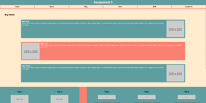

Assignments
Assignment 1 - Basic HTML

First Assignment in which basic html structure and syntax was declared. We implmented concepts such as headers, paragraphs, unordered lists, images, and more.
Assignment 2 - Basic CSS

Second Assignment in whcih we learend to use basci CSS to style a webpage. This included concepts like CSS syntax, background colors, text colors, fonts, and more.
Assignment 3 - Page Layout
Third assignment in which we learned to use CSS flexbox to create both horizontal and vertical layouts. We also learned to use media queries to adjust the layout for different screen sizes.
Portfolio Project
Part 1 - Topic Selection

Part one of the portfolio project in which I selected a topic to create a website for. I selected the topic of a personal portfolio website to showcase my work throughout school and my career.
Part 2 - Wireframe

Part two of the portfolio project in which I created a wireframe for my soon to be website. The Wirefram is simply a visual proof of concept that allows me to visualize what I want my website to look like in the future.